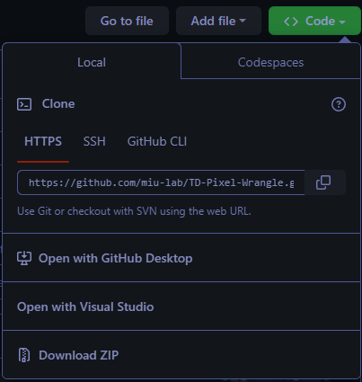
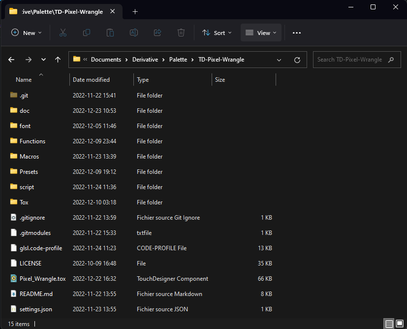
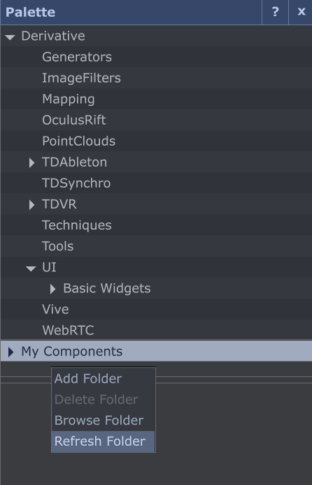

Installation
Prérequis
La seule chose dont vous avez nécessairement besoin pour commencer est une version de Touchdesigner récente (builds 2022.XX et ultérieures) installée sur votre machine.
Si vous n'avez pas de licence, vous pouvez tout de même utiliser Touchdesigner avec une licence 'NON-COMMERCIAL'. Ces versions possèdent la grande majorité des fonctionnalités et permettent en l'état de faire fonctionner Pixel-Wrangle.
Touchdesigner est accessible en téléchargement en suivant ce lien, il vous donnera un aperçu des différents modèles de licences.
Accessoirement, vous pouvez télécharger Git si vous souhaitez mettre à jour les futures versions de Pixel Wrangle directement via votre Terminal
Enfin, si vous souhaitez profiter de la documentation (en Markdown) dans les meilleures conditions, vous pouvez télécharger Obsidian. Vous y aurez accès indépendamment de votre connexion internet avec une interface sympa.
Télécharger le projet
Une fois Touchdesigner installé,
Si vous n'avez pas installé Git
- Télécharger le dépôt au format ZIP depuis https://github.com/miu-lab/TD-Pixel-Wrangle en cliquant sur 'Download ZIP' 
Installer Pixel Wrangle
Si vous n'avez pas installé Git :
-
Déplacez le zip téléchargé dans C:\Users\<YOUR-USER-ACCOUNT-NAME>\Documents\Derivative\Palette et extrayez son contenu dans ce dossier comme indiqué ci-dessous
-
Attention, il est important que le dossier racine du projet aie pour nom exact : TD-Pixel-Wrangle

OU Si vous avez installé Git
Lancez un terminal dans le dossier C:\Users\<YOUR-USER-ACCOUNT-NAME>\Documents\Derivative\Palette ou naviguez-y avec cd puis faites un 'git clone' du projet
Configuration
Si vous souhaitez travailler avec Visual Studio Code, vous pouvez tout de suite préciser le chemin de l'exécutable dans le fichier 'settings.json' à la racine du projet.
{"vscodePath": "C:\\Users\\<YOUR-USER-ACCOUNT-NAME>\\AppData\\Local\\Programs\\Microsoft VS Code\\Code.exe"}
Pour plus de détails sur l'utilisation conjointe de Pixel Wrangle avec Visual Studio Code, rendez-vous sur la page VSCode
Documentation
Si vous souhaitez accéder à la documentation en local et dans les meilleures conditions comme évoqué plus tôt, vous pouvez télécharger Obsidian.
Vous pourrez ensuite ouvrir un coffre (coffre : terminologie Obsidian pour désigner une architecture de fichier et dossiers en markdown).
Le coffre de la documentation est stocké dans le dossier 'doc' à la racine du projet, vous pouvez l'ouvrir directement dans Obsidian Chemin : C:\Users\<YOUR-USER-ACCOUNT-NAME>\Documents\Derivative\Palette\TD-Pixel-Wrangle\doc
Mise à jour de la Palette Touchdesigner
Lorsque vous lancez Touchdesigner à la suite de ces étapes, il peut être nécessaire de faire un refresh de la Palette Touchdesigner. 